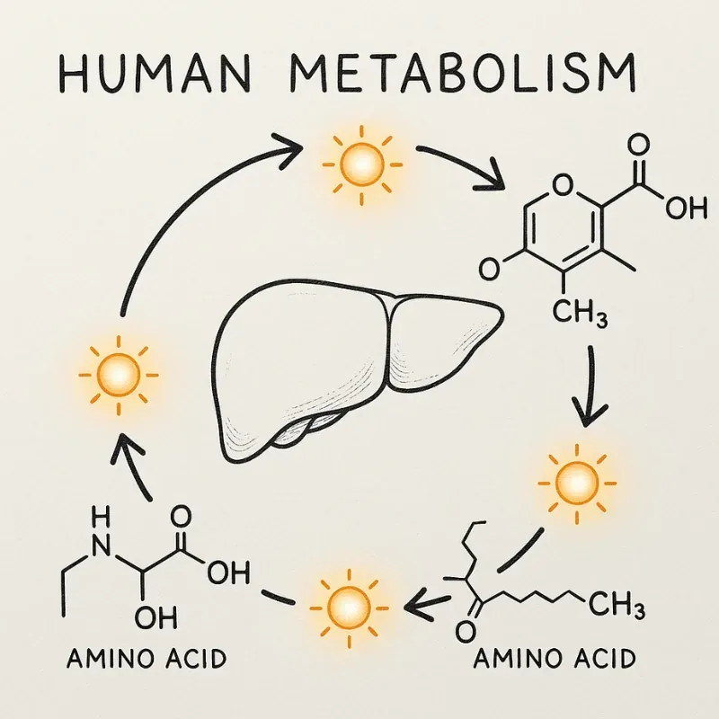
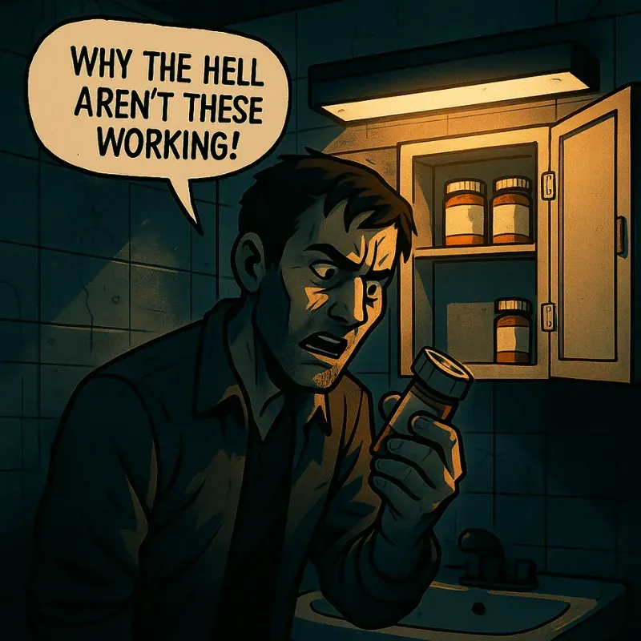

Some of what follows may feel like overkill if your recovery lens has mostly been abstinence-based or faith-based. The goal here isn't to excuse behaviour — it's to add the perspective that's been missing. Understanding the biology behind addiction doesn't erase responsibility; it sharpens the conversation. Looking at the genetic and metabolic factors lets us move beyond shame and moralizing and start asking a harder question: why do certain behavioural patterns not only emerge, but ruthlessly persist?
The science here goes deeper than any treatment program is likely to cover — and that's intentional. This isn't a conversion to pharmacogenomics. It's context, offered because understanding the biology is one of the fastest ways to loosen shame's grip.
The first time I heard about genetic predisposition in relation to addiction, I called bullshit. I refused to believe I was born with crossed wires or that my biology might be quietly steering the ship. It sounded like an excuse — and worse, it suggested that something else might be in control.
That started to change when I looked at my own family. My father avoided alcohol for most of his life because two or three beers made him sick. My body processed alcohol differently — efficiently enough that I could drink to excess and do it again the next day, and the day after that, for years. That contrast was impossible to explain away.
Years later, I see it much differently. Understanding the biology of addiction didn't weaken my sense of agency — it sharpened it. It gave me tools, context, and a kind of compassion I hadn't been able to access before. With every piece of science I absorbed, shame loosened its hold.
The liver is the body's main processing plant, and these enzymes are its frontline workers. Their speed and efficiency are a primary reason two people can take the same dose of a substance and walk away with completely different experiences.
Enzymes are the unseen hands that shape how every substance feels, lasts, and lingers.
| Enzyme | What It Does | Why It Matters |
|---|---|---|
| CYP2D6 | Breaks down many psychiatric meds, opioids, and stimulants | Influences how codeine converts to morphine, how long methamphetamine stays active, and how SSRIs like fluoxetine perform. Too slow → intense effects and compounding side effects; too fast → little to no benefit. |
| CYP3A4 | Metabolizes roughly half of all medications | Processes Xanax, cannabis, fentanyl, and many others. Variants here can make these drugs linger far longer than intended — or clear so fast they provide no relief. |
| CYP2C19 | Processes SSRIs, PPIs, and some benzos | Explains why a medication like citalopram can be heavily sedating for one person and completely ineffective for another — same drug, same dose, different biology. |
| ADH / ALDH2 | Break down alcohol and its toxic byproducts | Slow ALDH2 activity causes flushing, nausea, and a racing heart — a built-in biological deterrent to heavy drinking. Faster activity can make alcohol feel more rewarding and may increase addiction risk. (This is the same system behind the alcohol flush I saw in my father.) |
| COMT | Clears dopamine and stress-related neurotransmitters | Fast COMT clears dopamine rapidly — lowering baseline levels and driving risk-taking behaviour. Slow COMT allows dopamine to accumulate — increasing emotional reactivity and stress sensitivity. |
| MAO-A | Breaks down serotonin, dopamine, and norepinephrine | Influences mood stability, impulse control, and how the system responds to stimulants. |
| CES1A1 | Breaks down methylphenidate (Ritalin) and similar drugs | Explains why the same ADHD medication can feel overwhelming for one person and barely noticeable for another. |
| UGTs | Detoxify substances via glucuronidation (non-CYP pathway) | Particularly relevant for benzos like lorazepam, which bypass the CYP system — making them better tolerated in people with liver damage. |

Tests exist that can show you exactly where you land with some of these enzymes. Pharmacogenomic panels (cheek swab or saliva tests) map how your genes influence medication and alcohol metabolism. Blood tests can track how your body processes specific prescriptions in real time. For anyone who wants less guesswork and more clarity, these tools can make the science feel concrete — and directly useful in recovery.
Using pharmacogenetics for treatment-resistant depression we can be much more precise about exactly which drug will suit each person's unique blueprints for the bodily systems that usher the drug into the brain and enable it to fight depression. It's very personalized to each individual.
— Dr. James Kennedy, CAMH / ScienceDaily, March 29, 2022

Your genetic blueprint is the starting point — not the whole story. The substances you use, and the duration and intensity of that use, reshape these systems over time. Some of those changes reverse in recovery. This is one layer of the picture — important context, but not a complete explanation of addiction on its own.
This is part of why two people with the same diagnosis can respond so differently to the same medication — and why history of use matters when treatment decisions get made.
Consequences for Future Treatment
| Consequence | Why It Matters |
|---|---|
| Reduced medication effectiveness | Altered receptors or metabolism can blunt the impact of antidepressants, pain medications, or mood stabilizers — making an otherwise appropriate prescription feel useless. |
| Higher risk of side effects | Slowed clearance allows drugs to accumulate past therapeutic levels — into uncomfortable or toxic territory. |
| Greater risk of interactions | A taxed or over-adapted liver is easily overwhelmed when multiple medications compete for the same enzyme pathways. |
| More trial-and-error | Unpredictable drug response means finding effective psychiatric or pain medications takes longer — and often costs more in failed attempts before something works. |
The Recover-You Critique
Medication-assisted treatment can be life-saving. But too often it's applied like a template — the same medications handed to very different people, across very different histories, and measured against a standard that assumes everyone should respond roughly the same way.
The reality is that real metabolic differences exist from person to person — and years of substance use leave a mark on those processes in ways that aren't uniform. Alcohol, opiates, and stimulants don't just create different dependencies — they affect different systems in the body, and those systems are often the same ones medications need to work through. This is increasingly recognized in addiction medicine, even if the system isn't yet set up to routinely test for it. Someone who spent years on alcohol arrives at treatment with a different internal landscape than someone coming off opiates or stimulants. Those differences matter when it comes to what medications are likely to help, what's likely to cause problems, and what the body simply won't respond to. But a doctor who actually knows your history — what you used, for how long, and what it did to you — can at least make an educated guess. That's not precision medicine. But it's a better starting point than the boilerplate.
A poor medication response does not automatically mean resistance, noncompliance, or lack of effort. Sometimes it means the treatment is too standardized for a system that was never standard to begin with.
Understanding your genetics doesn't mean surrendering responsibility — it means you stop guessing. Your choices still matter, but they land differently when you know the ground you're standing on. Addiction is shaped by biology, environment, history, and circumstance. Reducing it to "bad choices" doesn't just miss the point — it fuels the shame that makes recovery harder.
The goal here isn't to send you chasing lab tests or genetic panels. It's to make clear that there are real, measurable mechanisms at work in your body — and that knowing this matters. Not because it changes what happened, but because it changes how you understand it. You are not broken for struggling. You are wired in a particular way, facing particular risks — and once you understand the system you're actually working with, the path forward gets a little less like guesswork and a little more like a plan.
Follow the next step in order, or branch out into related topics.
These sources ground the page’s focus on CYP450, ADH/ALDH2, COMT, MAO-A, CES1, and UGT variability — showing how genetic blueprints and chronic use shape drug effects, alcohol metabolism, side effects, and treatment response. They are educational and not medical advice.